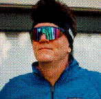

I am a professor of geography at the University of Colorado at Boulder. I joined the faculty in fall 2000 after training at the University of Chicago (M.A., 1978; Ph.D., 1982) and University of Wisconsin-Madison (B.A., 1976) and teaching at the University of Texas at Austin (1983-2000). In addition research in cultural geography, semiotics, and American landscape history, I teach computer methods and geographic information systems. My most recent grants from the National Science Foundation--for The Geographer's Craft Project and the Virtual Geography Department Project--are for developing hypermedia course materials in the Worldwide Web. My most recent books are Re-reading Cultural Geography (1994) which I co-edited with Peter Hugill, Kent Mathewson, and Jonathan Smith and Shadowed Ground: America's Landscape of Tragedy and Violence (1997). In my spare time I rehearse and perform baroque and modern flute, renaissance and baroque recorder, and viola da gamba with a variety of ensembles and with friends. I spent the 1998-99 in Hungary on a Fulbright Fellowship. I was based at the Department of Physical Geography at the University of Szeged in Szeged, Hungary. Here is a link to a street cam on Kárász utca, one of the main shopping streets in Szeged.